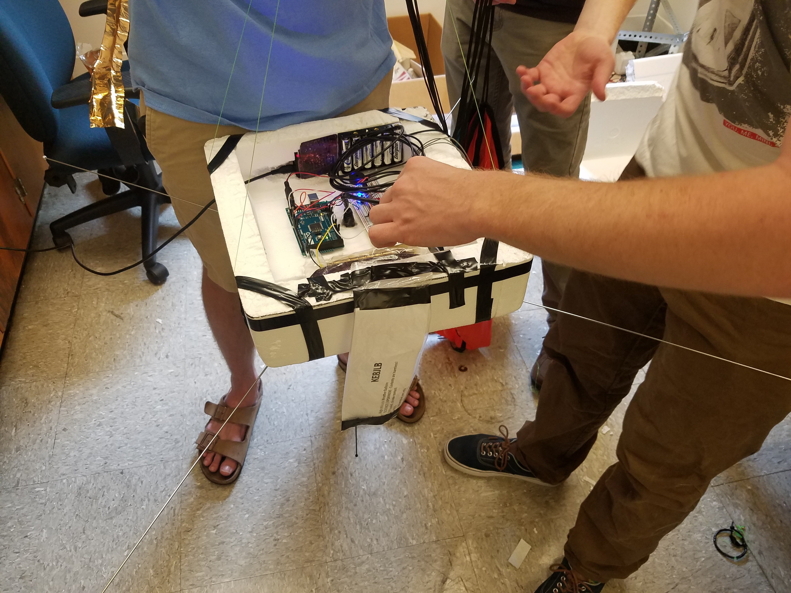

The Kelvin-Helmholtz Instability
Spontaneous transition from laminar to turblent flow, and some hilarious bugs!
Launch Day
 The APRS-strategy for balloon tracking turned out to be a good one.
The APRS-strategy for balloon tracking turned out to be a good one.
 After launching at about 1:15 pm, we chased the balloon down Interstate 85 for a couple hours, stopped for lunch, and then resumed shortly before the balloon descended. We had some scary moments with the Geiger counter not working at launch, but it came online as it passed the 25,000 ft mark or so. Personally I think the new batteries installed just before launch changed the tuning of the high-voltage component in the Geiger counter, which disabled it until the battery voltage dropped a little. But for a few minutes, we did lose hope.
Those who were tracking the balloon saw that it transmitted a final APRS packet at about 3,400 ft altitude – it must have lost line of sight to all nearby stations. At this point, the four of us chasing in the car were about 15 miles south of the balloon. We drove to roughly the point of last transmission so that we could stop and do some back-of-the-envelope calculations about where it landed. We knew the decent rate of the balloon from APRS, so we roughly knew the time it took to fall from its last transmission. Combined with the latest groundspeed value (also from APRS), we estimated a location and drove there.
My friend, who also has an amateur license, had an antenna and SDR extension for his laptop. Now I’ve only been mingling with the ham community for a relatively short time, but I’m still surprised I had never heard of these things – they’re pretty awesome. He pulled out his laptop, configured the SDR, and sure enough, we could see a weak signal at 144.390 MHz appearing every minute, unmistakably a sign of life from the balloon capsule.
The next couple hours were spent driving around Virginian countryside, trying to heed to abundant “No Trespassing” signs, knocking on a door, talking to a local – trying to find a stronger reception. We weren’t much closer to finding it, but suddenly my friend’s SDR software was able to decode an APRS packet directly. Of course, the packet contains the GPS position, so suddenly our search radius dropped from several miles to a few hundred feet.
The GPS information indicated the balloon was transmitting a few hundred yards from a road, beyond an empty field in some woods. We searched for almost 2 hours in some pretty thick undergrowth, getting a really strong signal. It was right on top of us, but we couldn’t see it. The sunset, and we were walking back to the car when somehow one of us spotted the thing in the fading light.
The GPS location wasn’t terribly accurate, about 400 feet off, so we definitely had to play the Marco Polo game as we closed in. By this I mean the game of walking in a random direction, checking whether the signal strengthened or weakened, a nd repeating. What an easier time we would have had with a directional receiver antenna!
All things considered, we were very pleased with the performance of the balloon telemetry.
Data Dump


Pretty Pictures from the GoPro